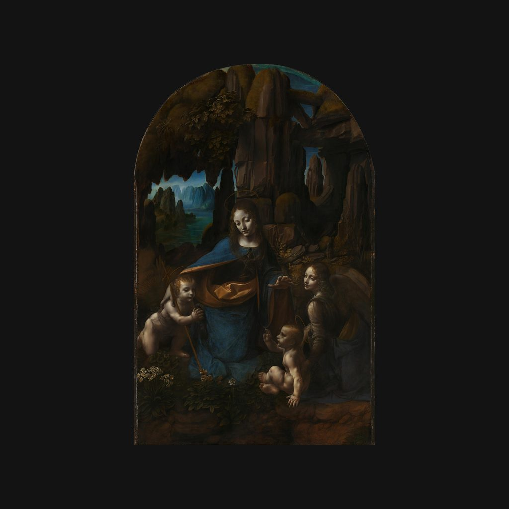

岩間聖母
達文西 · 約1491—1499年、1506—1508年
The Virgin of the Rocks
導賞節錄
岩洞入面，右邊個小嬰孩舉起隻手祝福，左邊個細路就合埋雙掌。
呢幅係倫敦嘅英國國家美術館收藏嘅《岩間聖母》，達文西用油彩畫喺楊木板上面，高一百八十九點五厘米，闊一百二十厘米。中間係聖母瑪利亞，佢護住左邊仲係細路嘅聖若翰洗者；右邊個嬰孩係基督，天使就喺佢身後。若翰係耶穌嘅親屬，長大之後會宣告耶穌嚟到，引導大家迎接佢，仲會為佢施洗。呢度畫嘅係幼年若翰合埋雙掌朝拜耶穌，承認佢嘅身份，耶穌就舉手祝福若翰。幅畫大約喺一四九一年或者一四九二年開始畫，畫到一四九九年，之後一五零六到一五零八年期間又繼續畫。達文西同時研究繪畫、工程同自然科學。呢幅畫橫跨咗佢第一次喺米蘭工作，同埋後來返到米蘭嘅兩個階段。
— 廣東話講稿 · Artvery
完整講解約 5 分鐘，可在 Artvery App 收聽。粵語、台灣普通話、內地普通話三種語音，館內對準作品即可識別播放。
即將登陸 App Store
App 即將推出，敬請期待。推出後免費下載，每座博物館單獨購買，一次購買永久使用。
作品資料
- 作者
- 達文西
- 年代
- 約1491—1499年、1506—1508年
- 尺寸
- 189.5 × 120 厘米
- 位置
- 英國國家美術館 · 16 世紀繪畫
- 館藏編號
- NG1093
英國國家美術館參觀攻略：必看名作和路線 · 英國國家美術館廣東話語音導賞